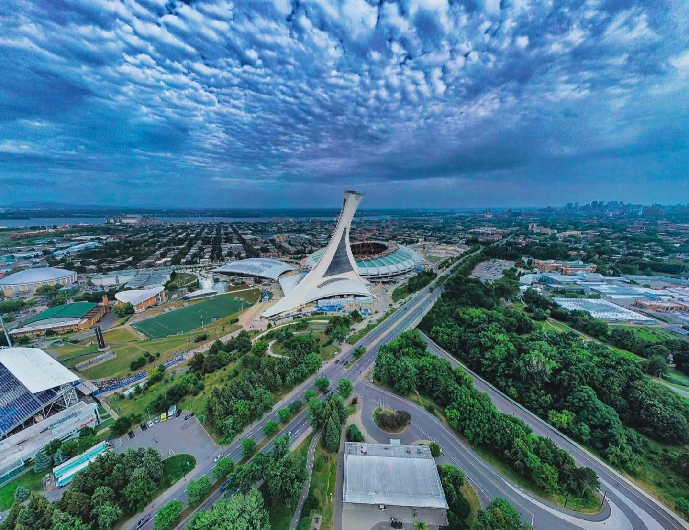
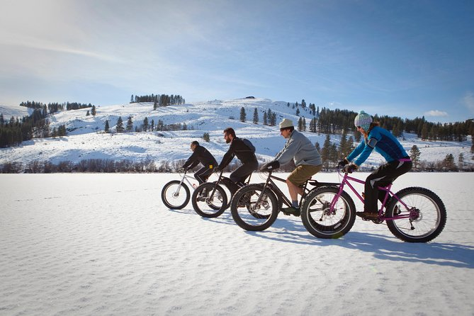
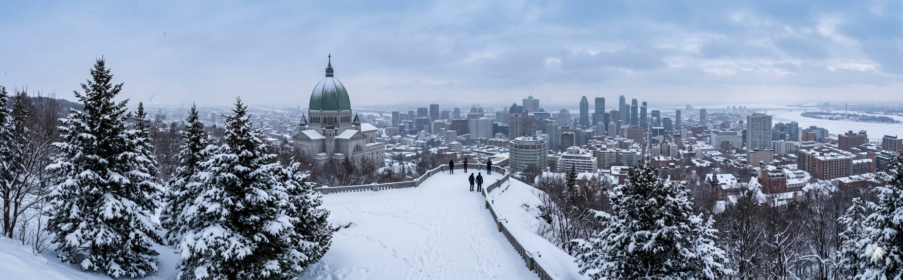
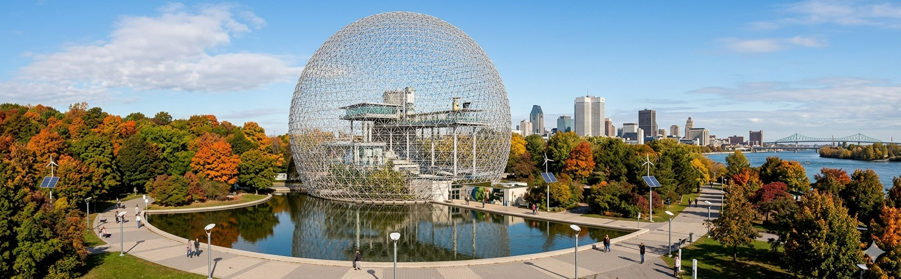
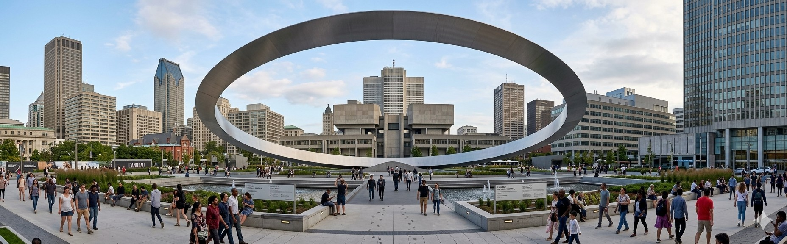
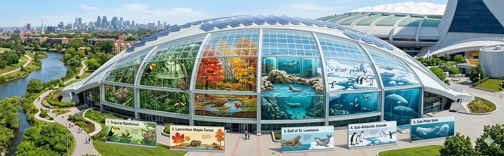
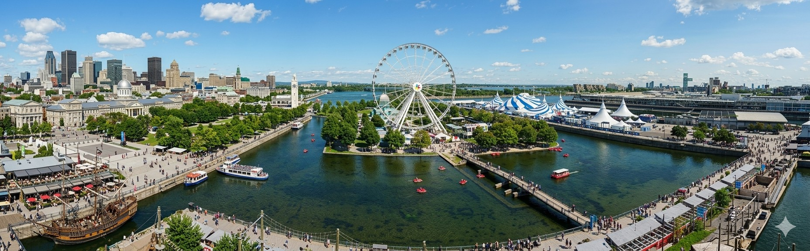

Sua próxima viajem ✈️

Montreal é uma cidade vibrante do Canadá que mistura charme europeu com modernidade, cheia de cultura, gastronomia e arquitetura histórica. Perfeita para quem busca experiências únicas, festivais animados e paisagens encantadoras em qualquer época do ano.
Para os amantes de viagem

As atrações de Montreal oferecem uma mistura única de história, cultura e entretenimento, com museus, festivais e pontos turísticos encantadores. É um destino perfeito para explorar arquitetura charmosa, gastronomia diversa e experiências inesquecíveis.
A magia do Canadá

O Mont Royal é o principal parque de Montreal, mudando completamente ao longo das quatro estações. No inverno, vira um paraíso de neve com esportes como patinação, esqui e trenó. Na primavera, o parque renasce com flores, trilhas e o retorno da vida natural. O verão traz muito verde, piqueniques, passeios e o famoso evento Tam-Tams. Já no outono, a paisagem se destaca com cores vibrantes como vermelho, laranja e amarelo. Cada estação oferece experiências únicas, tornando o local um ponto essencial para moradores e turistas.

A Biosfera de Montreal é um museu dedicado ao meio ambiente, localizado no Parc Jean-Drapeau. Reconhecida por sua estrutura geodésica icônica, foi originalmente criada para a Expo 67. O espaço oferece exposições interativas sobre sustentabilidade, clima e ecossistemas. É um destino ideal para quem busca aprendizado e contato com a natureza. Além disso, proporciona belas vistas da cidade e do Rio São Lourenço.

"The Ring" (O Anel) em Montreal é uma instalação artística monumental de aço inoxidável, com 30 metros de diâmetro e 23 toneladas, suspensa na Place Ville Marie, no centro da cidade. Inaugurada em 2022 para o 60º aniversário do local, a obra moldura o Monte Royal e simboliza a conexão entre a cidade e seus visitantes.

O Biodomo de Montreal é uma atração única que recria diferentes ecossistemas das Américas em um só lugar. Os visitantes podem explorar ambientes como floresta tropical, regiões polares e áreas marinhas. Cada espaço abriga animais e plantas em condições que imitam seu habitat natural. É uma experiência imersiva e educativa, ideal para todas as idades. Além disso, promove a conscientização sobre preservação ambiental e biodiversidade.

O Old Port de Montreal é uma das áreas mais charmosas da cidade, às margens do Rio São Lourenço. Repleto de história, o local combina arquitetura antiga com atrações modernas. É ideal para passeios ao ar livre, ciclismo, eventos e atividades culturais. No verão, ganha vida com festivais e esportes, enquanto no inverno oferece patinação no gelo. Também conta com restaurantes, cafés e belas vistas que encantam visitantes o ano todo.
O passeio ideal para fazer com a família
Montreal é um destino encantador que mistura o charme europeu com a energia moderna da América do Norte. Caminhar pelas ruas de pedra do Vieux-Montréal é como voltar no tempo, enquanto cafés, museus e festivais dão vida à cidade o ano inteiro. Conhecida por sua rica cultura, gastronomia incrível e diversidade, Montreal conquista visitantes com sua atmosfera acolhedora e vibrante. No inverno, a neve transforma tudo em um cenário mágico; no verão, os parques e eventos ao ar livre tomam conta da cidade. Seja para explorar arte, história ou simplesmente viver novas experiências, Montreal é o lugar perfeito para sua próxima viagem. Venha descobrir esse destino único e se apaixonar!